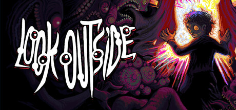
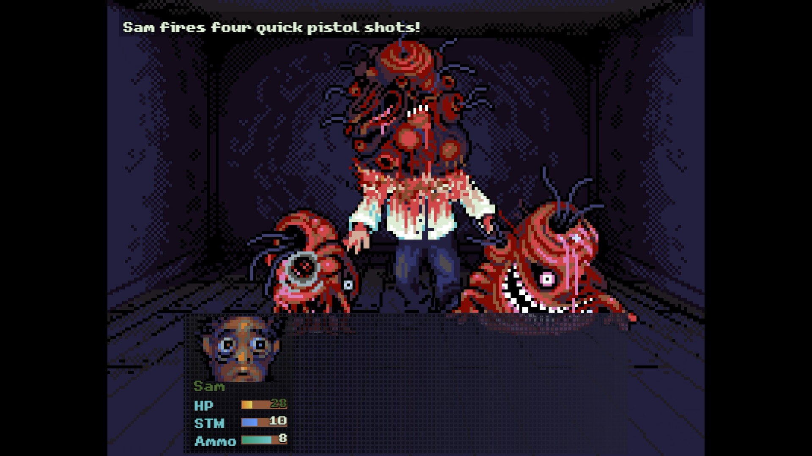
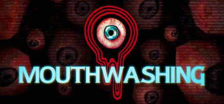
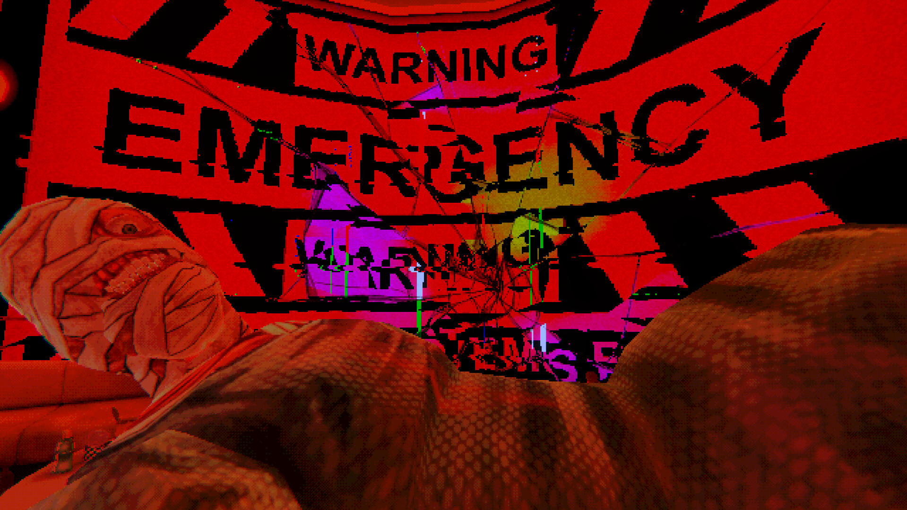
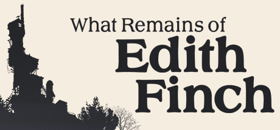
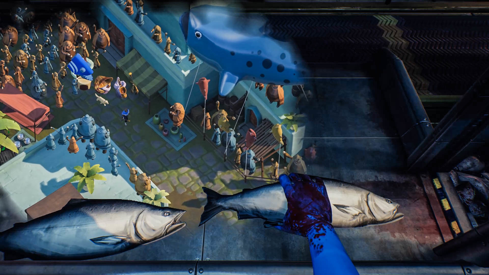
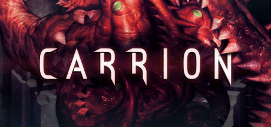
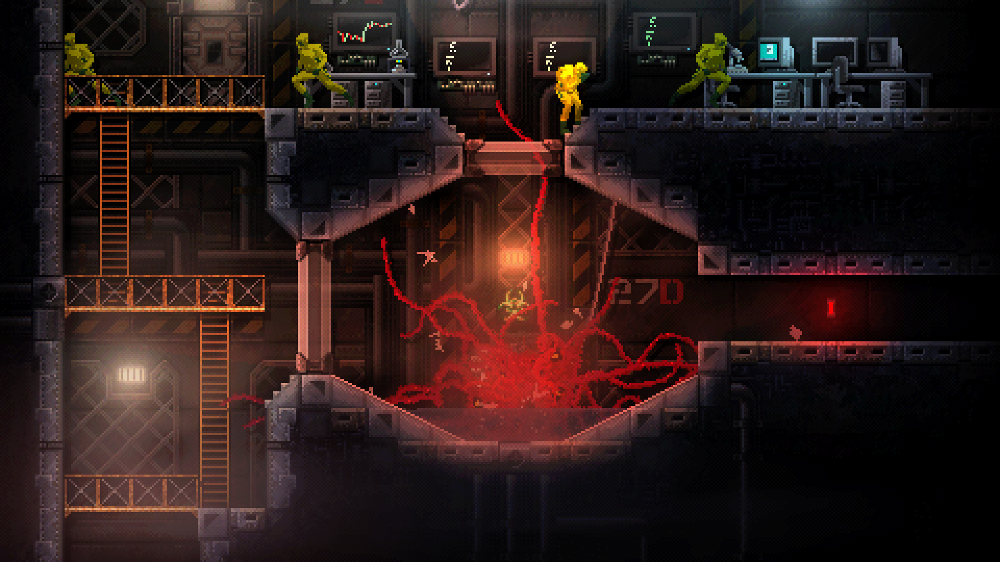

Game Jam · Team Briefing
Hawktober Horrors 2026
由 HawkZombie 主办的第 9 届「恐怖游戏 Jam」。每年以万圣节为核心做恐怖游戏，今年回归了「设定主题」。这份文档是给全队看的信息汇总，以及需要团队共同决策的事项。
主办 ▸ HawkZombie
已加入 1,012 人
已有 30 个作品
本届主题 ▸ 破碎的故事
1关键信息速览
| 项目 | 内容 |
|---|
| 主办方 | HawkZombie（Twitch 主播），今年第 9 届 |
| 标签 | #HawktoberHorrors |
| 开放投稿 | 2026-09-01 起 |
| 截稿 | 2026-10-03 13:59（太平洋时间） ⚠️ 需自行换算成你们所在时区 |
| 公布结果 | 2026-11-01（周日）Twitch 直播现场公布 |
| 类型限制 | 必须是恐怖游戏（引擎 / 代码不限） |
| 游玩时长 | 1–60 分钟 |
| 发行方式 | Windows 可运行，或浏览器 HTML |
| 主题 | 破碎的故事 / 不可靠叙述（Fractured story / Unreliable narrator） |
时区提醒：截稿写的是太平洋时间（PDT）。我们大概率不在该时区，务必提前换算成当地时间，并提前 1 天作为内部死线，别卡点。
2整体时间线
时间线示意（太平洋时间）。关键锚点：09-01 开放 → 10-03 13:59 截稿 → 11-01 公布。
开放投稿后
规则要求：所有作品必须从投稿期开始开发。概念与规划可以提前，但不能把做好一半的旧作品直接拿来交。
截稿前建议
在截稿前 3 天先提交一个「可玩版本」，之后还能持续更新。若后期投稿量大，投票期可能被官方延长。
3本届主题：破碎的故事
一个故事没有「讲全」，或者被刻意隐瞒、被用某一种偏向来叙述而忽略另一种；也可能是叙述者本身不可信，或是多个视角各执一词。这种「你不知道该相信什么」的不确定感，正是恐怖的核心。
「破碎故事」可以从这四个切口进入。
官方给出的参考作品（可借镜）
Memento · Dark Souls · Mouthwashing · Rashomon · Pulp Fiction · Bioshock
（多为电影/游戏，用来理解「不可靠叙述」的手法和气质，并非都要做成那样的玩法。）
4加分「调味料」（非必须）
这些不是硬性要求，但用上能增强游戏、或带来灵感。用几个、用多少随意——命中越多，评审越容易记住你。
- HawkZombie 作为角色/客串出现在游戏里
- 所有角色都是经典恐怖套路角色（Jock、Final Girl、Nerd 等）
- 游戏围绕某个重要节日展开
- 整个游戏发生在一个房间里
- 没有任何台词（口头和文字都没有）
- 某个角色在故事中被「救赎」
- 发生在公共场合（会展中心、商场等）
- 整个游戏从反派的视角讲述
- 游戏中所有信息都以谜语形式传达
- 游戏时长不超过 10 分钟
5能做 / 不能做（重点）
✅ 可以
- 任意引擎 / 代码库
- 任意素材，只要持有合法使用权
- 可同时参加别的 jam（需为恐怖游戏且遵守本规则）
- 允许开放 demo
- 允许成人内容（到 Mature/R）：脏话、血腥、暴力、部分裸露——前提是符合 Twitch 政策
- 允许组队，获胜时所有成员都有 Discord 角色
- 投稿期前可做概念与规划（但概念不能直接原样当成品交）
- 可提交多个作品，但同一人/队只能拿 People's 或 Judge's 其中之一
- 作品版权归提交者所有
🚫 不可以（取消资格）
- 不得使用已有项目——必须从投稿期开始开发
- 零容忍剥窃/盗用素材，包括未授权的同人游戏
- 绝对禁止生成式 AI（GenAI）——最终提交里不能有任何 AI 内容
- 必须能在 Windows 轻松运行（含浏览器 HTML）
- PDF 等文档不算游戏
- 时长超过 60 分钟易被判「未完成/不认真」
- 18+ NSFW 游戏不允许（注意与 Mature/R 的差别）
- 投稿期与投票期间必须免费、人人可玩
- 主办方有权随时取消违规作品，且不解释
速查表（贴墙用）
| ✅ 可以做 | 🚫 不可以做（红线） |
|---|
| 任意引擎 / 素材（须合法授权） | 使用已有项目（必须投稿期内开始做） |
| 同时参加其他 Jam | 盗用 / 剥窃 / 未授权同人素材 |
| 组队（全队都有获奖资格） | 任何生成式 AI 内容 |
| 成人内容到 Mature / R（须符合 Twitch） | 18+ NSFW 内容 |
| 投稿期前做概念与规划 | PDF 等非游戏形式的文档 |
| 提交多个作品（但只能拿一个奖） | 时长超 60 分钟 / 无法在 Windows 运行 |
| 作品版权归提交者所有 | 投票期收费或不可玩 |
三条「保命红线」请让全队背熟：
① 全程不用任何 AI；② 不用已有项目/不用扒来的素材；③ 别搞 18+。另外三件不要忘：Windows/浏览器可玩、1–60 分钟、投票期免费。
6如何提交 + 线上组队（我们已线下组好）
🖥️ 提交流程（通用 itch.io）
- 用 itch.io 账号在 jam 页点
Join this jam（已加入）。
- Dashboard →
Create a new project 建游戏页，上传游戏，价格设为 Free。
- 在项目页找
Submit to jam，选本 jam，可附 devlog，提交。
- 截稿前 3 天先交一个可玩版，之后持续更新。
- 提交前自查：免费 + 可玩 + 1–60 分钟 + Windows 可运行 + 无 AI + 无扒素材。
👥 线上组队做法
- 每个队员都各自点
Join this jam——这样才计入「Joined」，后续发 Discord 角色/算人数才认。
- 只建一个作品页，由 1 人当主提交人（其他人别各投一个，否则同队被拆分）。
- 把队员挂上作品页：官方开了 jam 的 Teams 功能就用它；否则用项目页的协作/成员功能添加。
- 加入 HawkZombie 官方 Discord（jam 页底部有链接，官方很欢迎开发者）。
- 上传前确定「作品归属 + 成员名单」，避免挂错人。
7奖励
🏆 大众前 5
People's Choice 前 5 名，各获 CraftPix 一年会员（每队每人一份，最多 5 人；需在 craftpix.net 注册领奖）。
👑 两项冠军
People's Choice 总冠军 + Judge's Choice，获 The Feathered Dead Discord 专属角色。
🎬 官方宣传
HawkZombie 选出一部最喜欢的，做成 45–60 秒宣传片挂在他频道。去年是 The Witch House of Raven Lake。
8同类参考游戏（含真实截图）
下列作品的封面与游戏内截图已下载到本地 assets/ 目录，可离线查看（文件名标注在各卡片内；每款还多存了一张 _ss2.jpg）。点链接可去商店页看预告片与更多截图。


Look Outside
本届系列的精神标杆（2024 届最出名），「破碎 / 不可靠」的范例。
文件：look-outside_header.jpg / look-outside_ss1.jpg
▶ Steam 商店（含预告片）
🗂 当年 jam 提交页


Mouthwashing（付费）
主题描述里点名的神作：碎片化 + 不可靠叙述教科书。
文件：mouthwashing_header.jpg / mouthwashing_ss1.jpg
▶ Steam 商店（含预告片）


What Remains of Edith Finch
每段记忆一种玩法——学「多视角 / 口述记忆怎么落地」。
文件：edith-finch_header.jpg / edith-finch_ss1.jpg
▶ Steam 商店（含预告片）


Carrion（你扮演怪物）
「反派视角」的标杆。
文件：carrion_header.jpg / carrion_ss1.jpg
▶ Steam 商店（含预告片）
说明：截图取自各作 Steam 商店页与 itch.io 作品页，已下载到本地 assets/，可离线查看；Dark Souls / Bioshock 属环境叙事参考，无独立截图。
9免费素材来源（无 AI 前提下）
规则禁止 AI 内容，所以所有素材要么手绘、要么用合法授权/CC0 免费包。下面是保底来源：
| 素材 | 来源 | 说明 |
|---|
| 2D 道具 / UI / 音效 | Kenney（kenney.nl） | 全 CC0，最佳保底，量大质稳 |
| 音效 | Freesound、OpenGameArt | 优先筛选 CC0 或可商用授权的 |
| 字体 | Kenney 字体、Google Fonts（OFL） | 选免费可商用授权 |
| 自绘素材 | 团队手绘 | 按需要少量自绘，避免依赖 AI 生成 |
10初步排期（假设剩 ~3 周，可依实际天数调整）
| 阶段（天） | 目标 | 产出 |
|---|
| D1–D2 | 锁定玩法 + 剧本大纲 + 分工 | 故事板、角色分工表 |
| D3–D4 | 技术原型：先验证最难的技术点是否可行 | 可跑的原型 demo（先做最难的） |
| D5–D8 | 核心系统 + 剧本 / 内容细化 | 系统可跑、脚本定稿 |
| D9–D12 | 内容填充（关卡 / 美术 / 文本） | 规则内可玩完整版 |
| D13–D14 | 音效/氛围/音乐 | 恐怖氛围到位 |
| D15–D16 | 打磨 + 多人试玩 | 修复清单 |
| D17–D19 | 提交准备：游戏页、截图、devlog、Web + Windows 导出 | 发布页面 |
| D20–D21 | 缓冲 + 提交（提前于截稿 3 天） | 正式提交 |
11提交前自查清单（逐项打勾）
- 是恐怖游戏
- 时长在 1–60 分钟内
- Windows 可运行，或浏览器 HTML 可玩
- 投稿期内才开始的开发（没拿旧项目）
- 所有素材合法授权（无剥窃/无未授权同人）
- 全程无任何 AI 生成内容
- 投票期免费、人人可玩
- 已在 10-03 13:59（当地时区）前提交
- 游戏页挂好了全队成员，且每个人都 Join 了这个 jam
- 已加入 HawkZombie 的 Discord
12需要团队内部定夺的事项
以下事项由团队内部决定，本文档只列题目、不提供倾向性建议。
- 玩法方向：做什么类型的恐怖游戏、核心玩法是什么。
- 美术风格：整体视觉方向与素材策略。
- 引擎与技术选型：使用什么引擎 / 代码库。
- 分工：剧本 / 程序 / 音效 / 上架与截图，各由谁负责。
- 时区：各成员所在地，换算截稿时间，定「内部死线」。
- 账户与归属：谁有 itch.io 账号可做主提交人（需能操作发布页）。
- 沟通渠道：用哪个 Discord / 群 / 仓库？共享素材怎么放？
— 文档由助手整理，基于官方页面规则与已公开信息；发布日期与规则如有变动，以 itch.io 官方页面为准。—